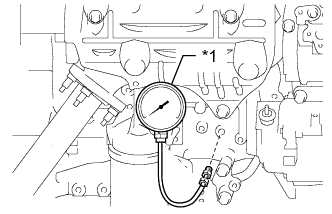

СИСТЕМА СМАЗКИ ДВИГАТЕЛЯ > ПРОВЕРКА БЕЗ СНЯТИЯ С АВТОМОБИЛЯ |
| 1. CHECK ENGINE OIL QUALITY |
Check the oil for deterioration, water contamination, discoloring or thinning.
If the quality is visibly poor, replace the engine oil and oil filter element (See page Нажмите здесь).
| 2. CHECK ENGINE OIL LEVEL |
Warm up the engine and then wait for 5 minutes after turning the engine off. The oil level should be between the low level and full level marks of the dipstick.
| 3. INSPECT OIL PRESSURE |
Remove the oil pressure switch (See page Нажмите здесь).
|  |
Install an oil pressure gauge.
| *1 | Oil Pressure Gauge |
Install the vacuum pump oil inlet hose (See page Нажмите здесь).
Install the engine oil level dipstick guide (See page Нажмите здесь).
Warm up the engine.
Measure the oil pressure.
| Condition | Specified Condition |
| Idling | 29 kPa (0.3 kgf/cm2, 4.3 psi) or higher |
| 3000 rpm | 294 to 539 kPa (3.0 to 5.5 kgf/cm2, 43 to 78 psi) |
Remove the engine oil level dipstick guide (See page Нажмите здесь).
Remove the vacuum pump oil inlet hose (See page Нажмите здесь).
Remove the oil pressure gauge.
Install the oil pressure switch (See page Нажмите здесь).